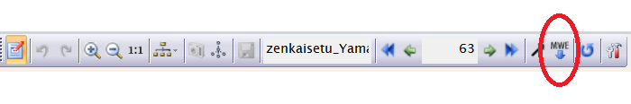
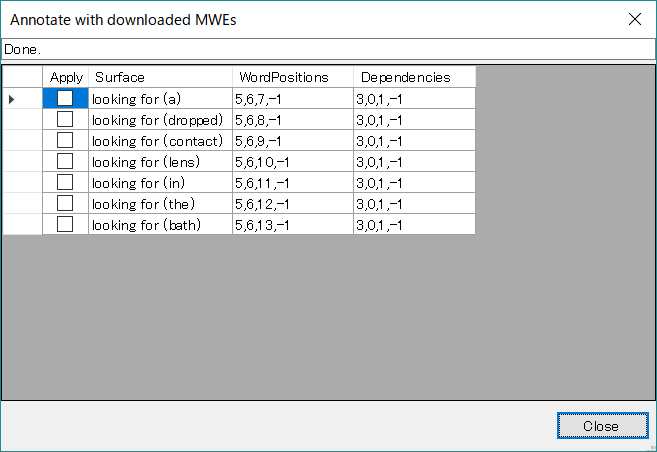

複合語アノテーションを行う
外部辞書CradleExpressと連携する場合、DependencyEdit Panelを使って 複合語(MWE)アノテーションを自動的に行うことができます。（限定公開機能）
DependencyEditパネルのツールバーから「MWE（複合語） Download」ボタンをクリックします。(下図赤丸部分)

※ MWE Downloadボタンは、DependencyEditにおいて文編集を行っている間、有効となります。
ボタンをクリックすると、外部Web辞書(CradleExpress)にREST APIにより接続し、現在の文にマッチする複合語の候補を 全てダウンロードします。 REST APIとしては、CradleExpressの公開する下記のAPIを使用しています。
API名: find_mwe Request: GET /find_mwe?surface=<表層形> Response: Requestの表層形と部分一致するようなMWEをDBより検索し、一致した語の全内容をJSON表現したもののリストを返す。
現在の文に属するすべての語についてこのAPIを呼び、結果をグリッド形式でダイアログにてユーザーに提示します(下図)。

Placeholderを含むMWE項目については、Placeholderを文中のマッチするWordに置き換えます。 上の例で、”looking for ~”という辞書内の語(MWE)は、Placeholder Wordを一つ持っているので、文中のPlaceholderになる可能性のある語すべてをChaKi側で展開し、”()”内に補ってリストしています。ここでは、forに続くすべての語がPlaceholderにマッチする可能性があるため、候補となっています。 Cradle側のPlaceholderに何等かの制限（現在は品詞のみ。例えば”POS=NN”）があれば、ChaKi側でもその制限に合致する候補に絞り込んで表示します。
リストの各項目について、”Apply”カラムにチェックボックスを設けており、これをチェックするとその候補をDepdency構造上にアノテーションとして追加・表示します。 上の例では”looking for (lens)”が正しい候補であるとユーザーが判断したとすると、それをチェックすることにより即座にDependency構造に下記のようなアノテーションが自動追加されます。

このアノテーションはCradleが持つMWE Dependency構造をそのまま適用したもので、”MWE” Link, “MWE” Segment, “MWE” Groupをすべて用いて行われます。
チェックを解除すると操作はundoされ、アノテーション追加操作を前の状態に戻すことができます。
チェックボタンによる自動アノテーションは、チェック時に確定しますので、適宜check/uncheckを行いながら正しいMWEアノテーション状態を作り出し、完了した時点でダイアログを閉じると、その状態のままDependencyEditに戻ります。